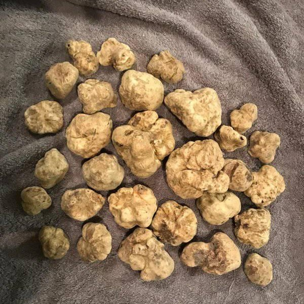
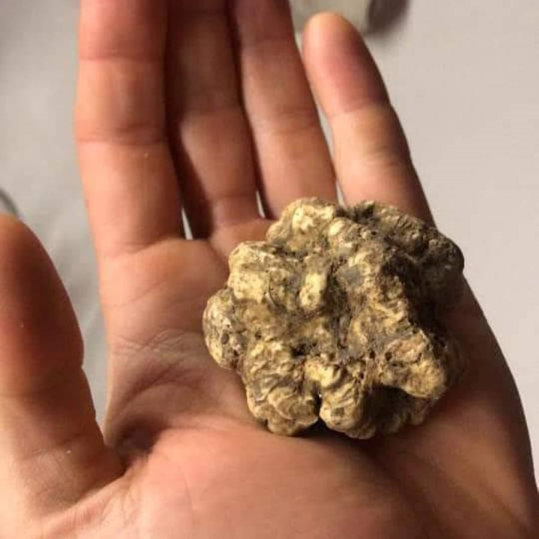
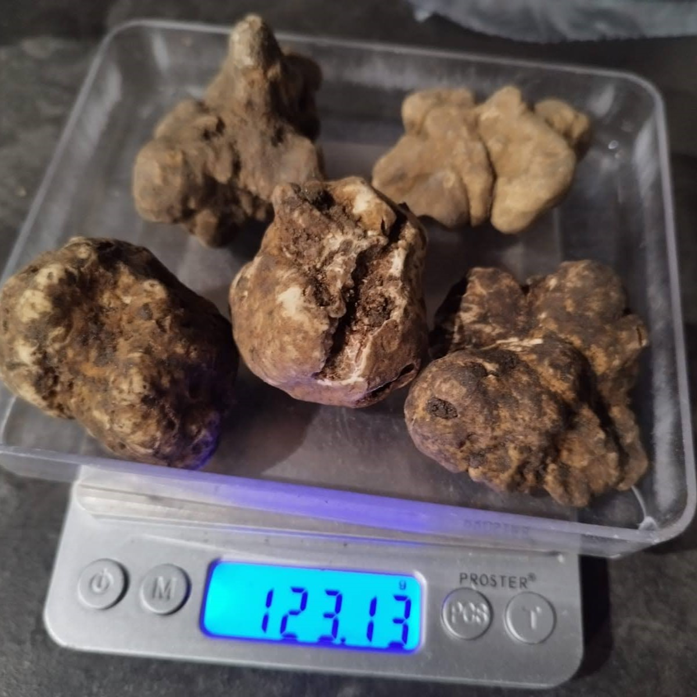
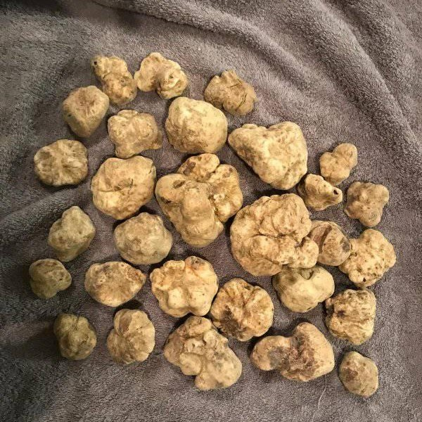
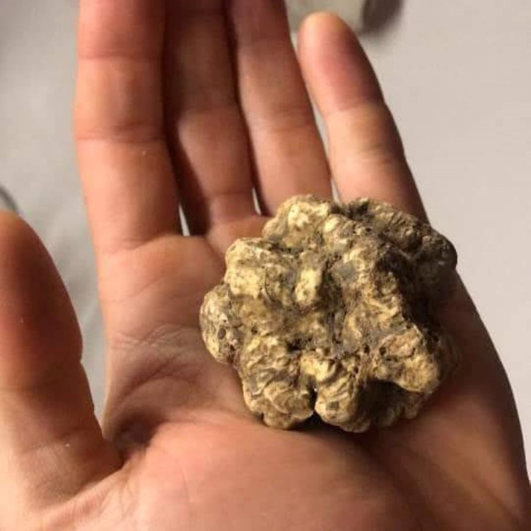
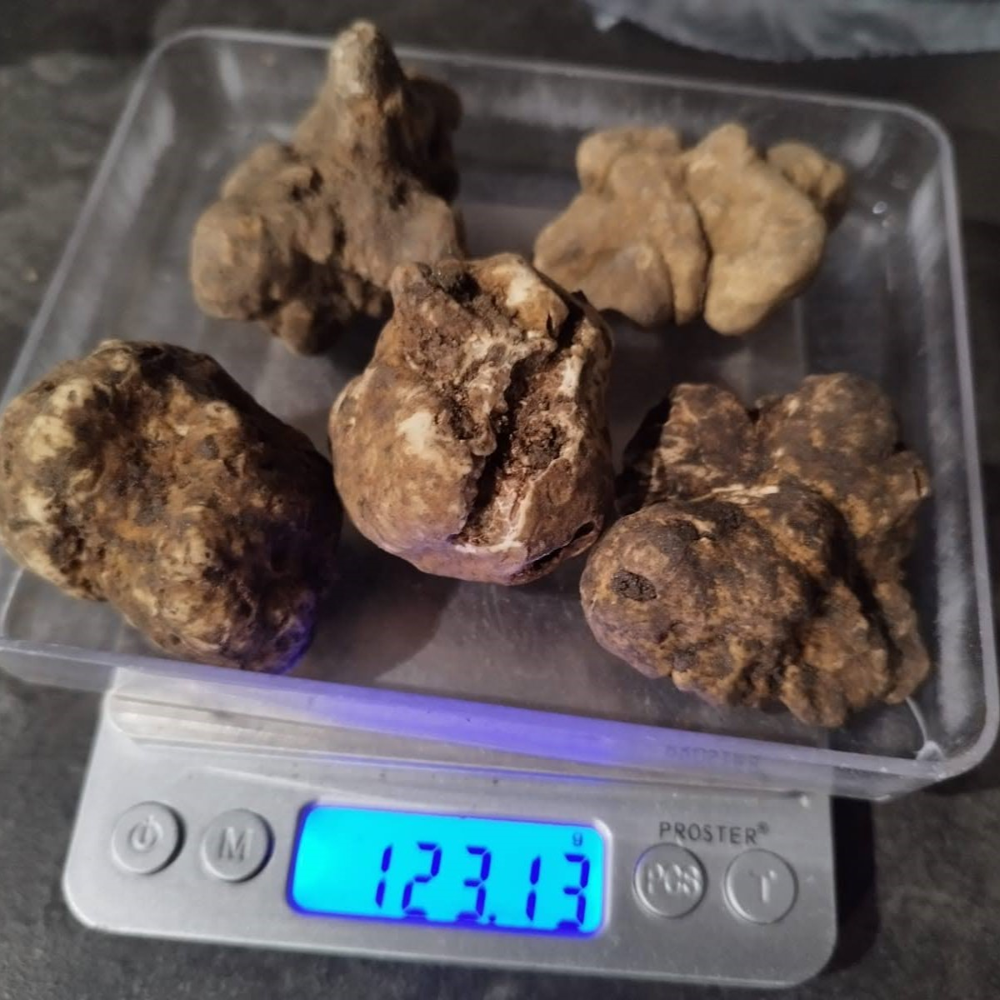

Parlando di valore, una distinzione importante viene fatta tra il tartufo bianco ed il tartufo nero, anche considerando il loro specifico utilizzo in cucina.
Il tartufo bianco viene, il più delle volte, utilizzato tagliandolo finemente a crudo, con un apposito strumento (il tagliatartufi), sopra i tagliolini al burro, le uova al tegamino, la tartare di carne, il gelato alla vaniglia, e tante altre delizie culinarie.
Per quanto riguarda il tartufo bianco d’Alba, il prezzo varia dai 2 ai 5 euro al grammo.
Mentre per i tartufi neri, consumati per lo più da cotti, il prezzo é in generale più contenuto: attorno ai 60 centesimi al grammo.
Parlando di gusto, per assoporarne l’aroma sono necessari dai 5 ai 10 o più grammi di tartufo bianco (come già detto, tipicamente consumato crudo per esaltarne il sapore).
Per il tartufo nero, invece, a parità di gusto è necessaria una quantità doppia.
Generalmente si può dire che, facendo due conti, un buon piatto di tartufo preparato in casa, o al ristorante, non costa nemmeno tanto quanto la maggioranza delle persone crede.
C’è comunque da ammettere che non tutti apprezzano allo stesso modo: chi lo ama e ripetutamente durante l’autunno ne assapora l’aroma gustandolo in abbondanza in vari piatti, e chi, purtroppo, per via del loro inconfondibile odore, non riesce nemmeno a stare nelle vicinanze!
.jpg) 




